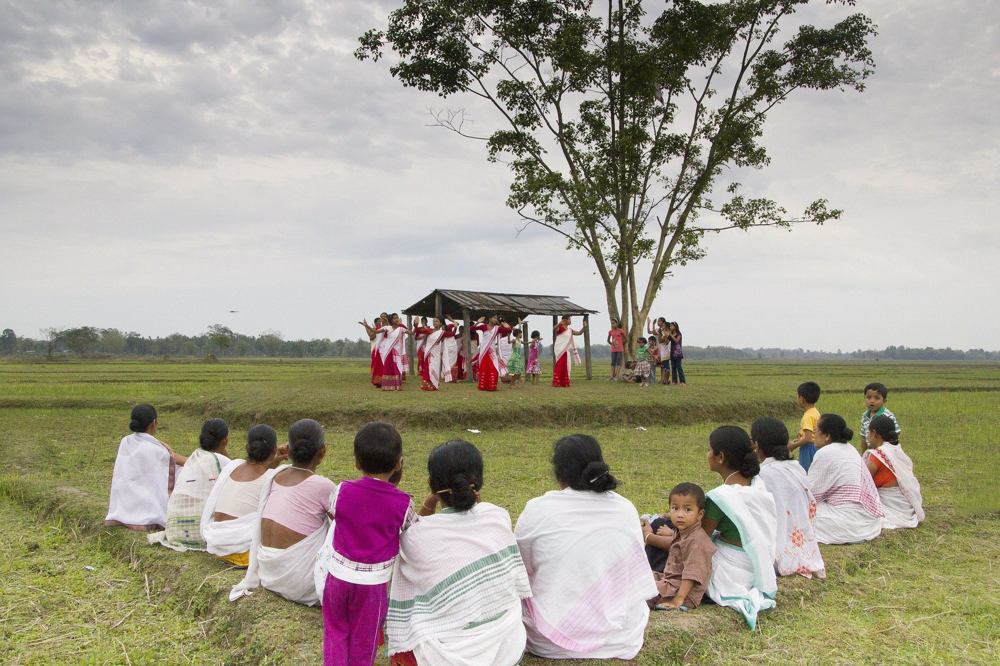
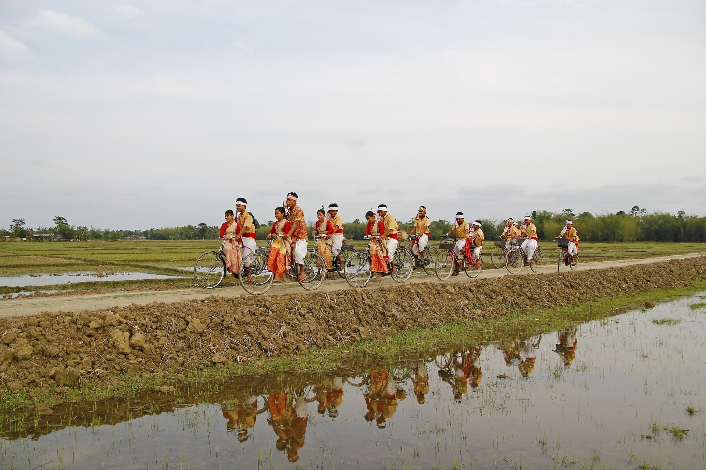
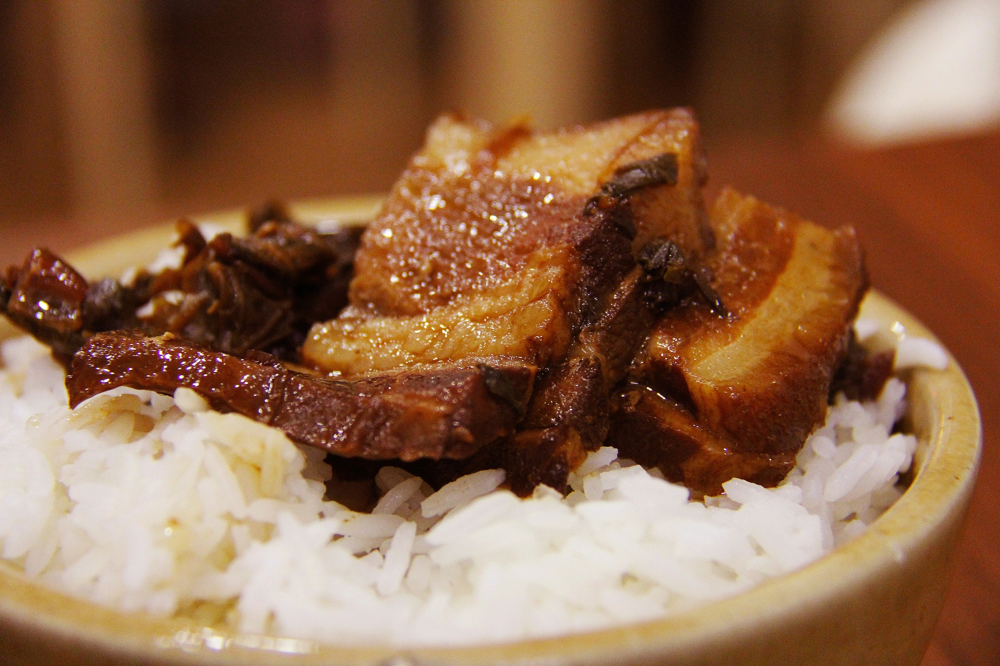

Located in the fold of The Great Himalayas, Assam is one of the most beautiful states of North-East India. Generated from the fusion of the cultures of Mongolia, mainland India and Burma, the traditions of Assam is truly unique and fascinating for people who have never been to this land. The rocky terrain wrapped up with the blanket of greenery, Assam is a state of ethereal beauty.
Festival of Assam
Throughout the year, the people of Assam celebrate different colorful and joyous festivals. While all of them are worth attending, the most popular one is Bihu. This festival is celebrated to mark the important times of a cultivator’s life over the cycle of a year. The interesting thing about this festival is, it is non-religious and irrespective of caste and creed, everyone can take part in it.
Also known as Rongali Bihu, Bohag Bihu is observed in the mid-April to celebrate the beginning of the next sowing season. The next Bihu is celebrated in October when the farmer harvests the crop and brings it to home. This Bihu is known as the Kangali Bihu or Bhogali Bihu. You must attend the colorful functions of Bihu if you are exploring the state during this time.
Other than Bihu, Ali-AI-Ligang is yet another festival that people of Assam celebrate during Spring.
Traditional Dress
The traditional Assamese dresses are hand-loomed, colorful and not overly gaudy. The women wear intricately designed mekhela chador or Riha-Mekhela and the men wear dhoti or suria.
Gamosa is another indispensable part of Assamese attire. You can see the presence of gamosa in almost all socio-religious ceremonies of the land. From the Kamrupi word Gamasa, the words Gamosa has been derived. It is a white colored rectangular piece of fabric made of pure cotton. It has intricately designed red borders on all four sides. You can also find beautiful motif rich gamosas in Assam.
Assamese men love to wear dhoti gamosa which is another traditional dress of the state. During the Bihu festival, you can find the gamosa wrapped around the head of the male Bihu dancers. The gamosa is often used to cover the scriptures or the altar of the prayer halls.
Folk Music
The history of Assam is very long and deep-rooted. So, there is no surprise that the state will be rich in folk music. Since the time of Kamrup Kingdom until the British rule, the culture of Assam has been heavily influenced by each of the rulers. This influence has clearly reflected on the folk music of Assam. The fusion of different cultures gave the folk music of Assam a truly remarkable character.
The tradition of classical music is also worth mentioning. The classical Assamese music can be divided into two parts. The Ojapali and Borgeet, both of which are a combination of singing and dancing.
Classical Dances
Satriya, Ojapali and Devdasi are the most important dance styles of Assam. In the Ojapali dance form, the lead dancer narrates a mythological tale. This dance form is a unique fusion of classical dance and acting. Ojapali dance form can also be divided into the following three types.
- Biya-gowa: Narrates the stories of Mahabharat with rhythmic use of feet.
- Ramayana: It is based on the Assamese version of Ramayan.
- Sukananni: It worships and celebrates the Snake Goddess, named Manasa.
Devdasi is a conventional dance form that the unmarried women, who dedicated their lives to the god, used to perform in the temples of Assam.
Along with the classical dances, the folk dances of Assam are also worth mentioning. Bagurumba dance of Bodo tribe and the Jhumur dance form of the Adivasis are truly sublime. If you really want to explore the culture of Assam, make sure to see one of the dance performances while you are here.
Cuisine
The taste of Assamese dishes is completely different from the spicy cuisine of the rest of the nation. The traditional Assamese dishes are less spicy and mostly non-vegetarian. Rice is the staple food of Assamese people, which is often enjoyed with various fish dishes. The most popular fish preparation is called masor tenga which is tangy and flavorful.
Pato diya mas is yet another delicacy of Assam where the fish is wrapped in the banana leaves and baked. Dried fish is the tribal delicacy that you should try while visiting the state. You can also taste various unique tasting meat preparations which are prepared with duck, fowl or mutton.
The description of the traditional Assamese cuisine will be incomplete if we don’t talk about the sweet dishes of the state. Pitha is one of the most popular sweet dishes that you can find at almost every corner of the state. The variations of the pitha are many, and each of the variations undoubtedly tastes heavenly.
While most travelers love to explore India, they often do not include the beautiful state of Assam from their itinerary. This is a grave mistake on their part. Visiting Assam is a must if you truly want to explore the diversity of India. With its ecstatic beauty and unique tradition, Assam is waiting to be explored.